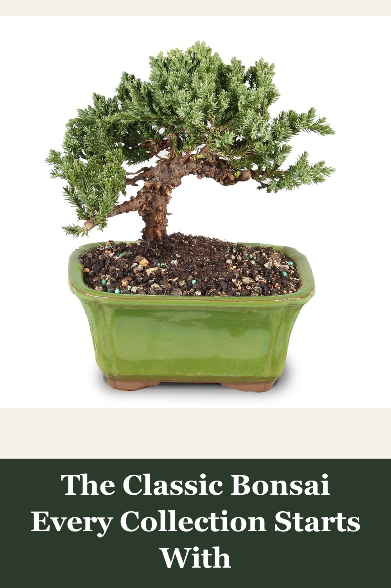
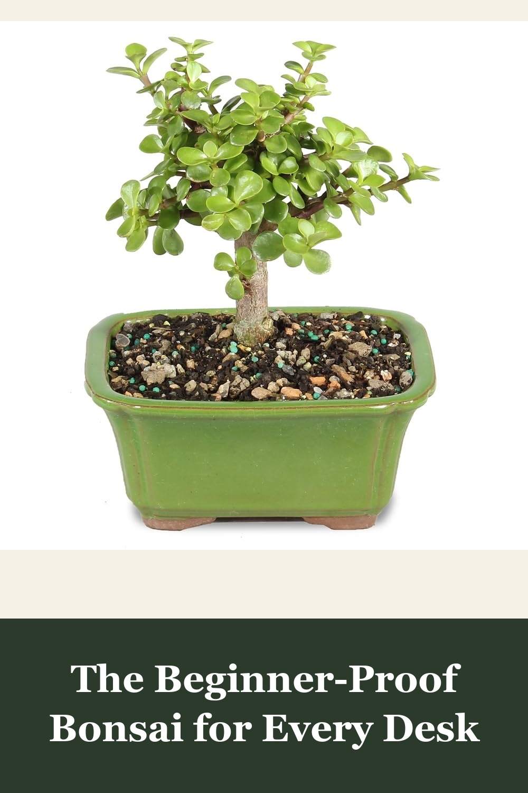
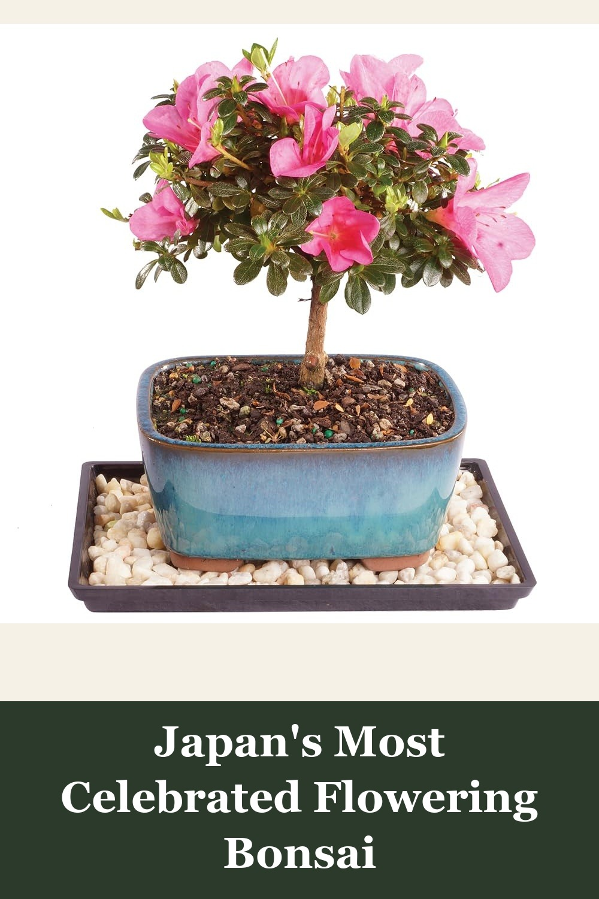

Brussel's Bonsai - Small Juniper Live Bonsai Tree, Outdoor, 3-Year Old
Juniper is the tree most people picture when they think 'bonsai' — a hardy, easy-to-train evergreen with silvery-blue foliage over a twisting trunk. Grown for 3 years by Brussel's Bonsai, a real specialty nursery, and shipped with a USDA phytosanitary certificate.
This bonsai tree is absolutely gorgeous! Arrived healthy and well-packaged. The shape and detail are amazing for such a small tree. Perfect size for my desk and really adds a peaceful vibe to my workspace. Seems hardy and easy to care for so far. Love having a piece of nature indoors. Great quality and exactly what I was hoping for!— verified Amazon buyer
View on Amazon →
Brussel's Bonsai - Small Live Jade Bonsai Tree, 3-Year
A thick woody trunk and glossy jade leaves that thrive indoors on minimal watering — the easiest way to keep a living bonsai alive as a total beginner. Arrives potted and ready to display, no growing-from-seed wait required.
This tree came very well packed for delivery and it is absolutely gorgeous. Very easy to care for and is growing like crazy which is more fun than my other much slower growing Bonsai. Photo is her after a few months and ready for a good trim.— verified Amazon buyer
View on Amazon →
Brussel's Bonsai - Small Satsuki Azalea Live Bonsai Tree, 5-Year Old
Satsuki azalea is the star of Japan's bonsai exhibitions every spring — this 5-year-old tree arrives already trained into its compact bonsai form, ready to burst into vivid pink blooms in your own garden or on your patio.
Absolutely impressed with this purchase! My second order! The bonsai arrived in beautiful condition, healthy, vibrant, and clearly well cared for. It looks even better in person than I expected. This people really know their craft! Highly recommend for anyone looking to bring a bit of natural beauty and serenity into their home. Couldn't be happier!— verified Amazon buyer
View on Amazon →